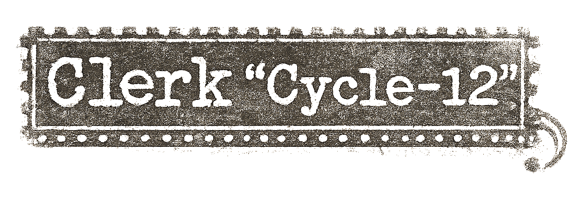

Clerk "CYCLE-12" is a story-driven point-and-click sci-fi adventure set in a vast, isolated facility.
You follow a technician tasked with completing a critical procedure by unlocking sealed systems that require personal authorization codes. The only way forward is to navigate symbolic realms shaped by each crew member.
Each mission leads you through imaginative environments filled with puzzles, memory fragments, and hidden details that gradually uncover a much bigger story.
Comments (0)